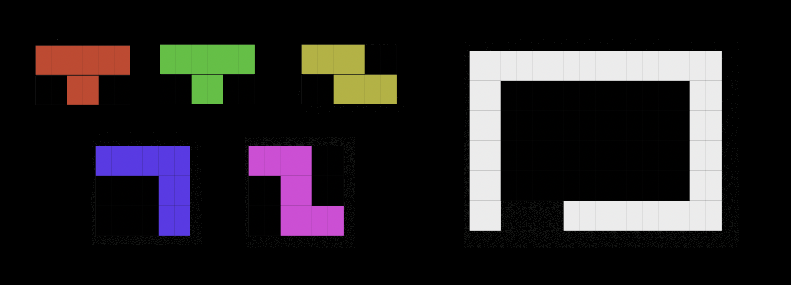

Problem
Slide and rotate the following pieces (on the left) into the 'room' (on the right), through the 'door' (bottom left of the 'room'). The puzzle is effectively 2D, except that we are allowed to flip the pieces (this provides extra degrees of freedom compared to rotations and translations only, because some of the pieces are chiral).
If you want to solve the puzzle intuitively, reading this page won't actually ruin it, but as a disclaimer: the ipython notebook does show the solution.

Solution Approach
Initially it seems like you would need to model complicated processes like continuous sliding. This would be hard. A much simpler problem is to find all options for the final configurations of the pieces. It turns out that if we find all possible configurations and then filter out those which obviously can't be 'slidable', we are left with only three final configurations (for this particular setup). Then it is very intuitive for a human to complete the final step by finding the only 'sliding' solution.
The fact that the simple 'filtering' approach works so well is quite lucky. This part would need more thought in order to scale well.
However, while solving this puzzle I discovered a very efficient process for finding all the possible configurations. It's this part that I'd like to explain in detail. The method is quite general so it could be easily adapted to dimensions other than 2, and I think there's potential to include different constraints on how the pieces can fit together (maybe, jigsaw-like pieces?).
Finding Configurations
- Represent each piece by a binary matrix, e.g. A = np.array([[1,1,1],
[0,1,0]]) for the T-shaped tetris piece.
- For each piece, find all its possible positions in the h x w grid. Each position is encoded by a length hxw binary configuration vector, formed by flattening the h x w grid. For example, this configuration of piece A:
\[ \left ( \begin{matrix}
0 & 0 & 0 & 0 & 0 & 0 \\
0 & 0 & 1 & 1 & 1 & 0 \\
0 & 0 & 0 & 1 & 0 & 0 \\
0 & 0 & 0 & 0 & 0 & 0 \\
\end{matrix} \right ) \] would be encoded by this configuration vector:
\begin{matrix} (0 , 0 , 0 , 0 , 0 , 0, \quad 0 , 0 , 1 , 1 , 1 , 0 , \quad 0 , 0 , 0 , 1 , 0 , 0 , \quad 0 , 0 , 0 , 0 , 0 , 0) \end{matrix}
All the valid configurations are encoded by a ?x(hxw) configuration matrix, formed by stacking the configurations vectors. The value of ? depends on both the type of piece and the grid.
- Define a zip-up function, that takes two configuration matrices, A and B, and returns a configuration matrix, C, for the composition of the two pieces:
- Find the product AB^T.
- Each entry of AB^T counts the number of overlapping squares in the corresponding piece configurations (encoded by the rows of A and B). In particular, it is zero exactly when the piece configurations do NOT overlap.
- Check every entry of AB^T. For every zero-entry, add a row to C that encodes the composition of the pieces in that configuration - i.e. A[i,:] + B[j,:].
- Now C has a similar structure to A and B but represents all possible configurations of a pair of pieces.
- The zip-up function does most of the work for us. To find all joint configurations of more than two pieces, we just need to apply it repeatedly to eventually join all of the pieces together.
What about efficiency?
- The number of zip-up applications required is ceil(log_2(n)) where n is the number of pieces.
- Constructing the C matrix does require us to check every entry of a large matrix, whose size is unknown before execution. However,the size of this matrix does not seem to explode, in practice, because the curse of dimensionality is balanced out somewhat by the decreasing amount of space in the grid as we add more pieces to the configurations.
Filtering Out Non-Slidable Solutions
The remarkably simple filtering system that I used was:
- Does at least one piece on the final configuration have enough space around it that it can slide in at least one of the four directions?
- No: discard. (If you can't get out of a configuration, you can't get into a configuration.)
- Yes: is at least one piece still movable if we remove that piece?
- No: discard.
- Yes: keep this configuration.
Conclusion
That's all. I have made it into an ipython notebook, so you can try it on different starting pieces and grids. :)